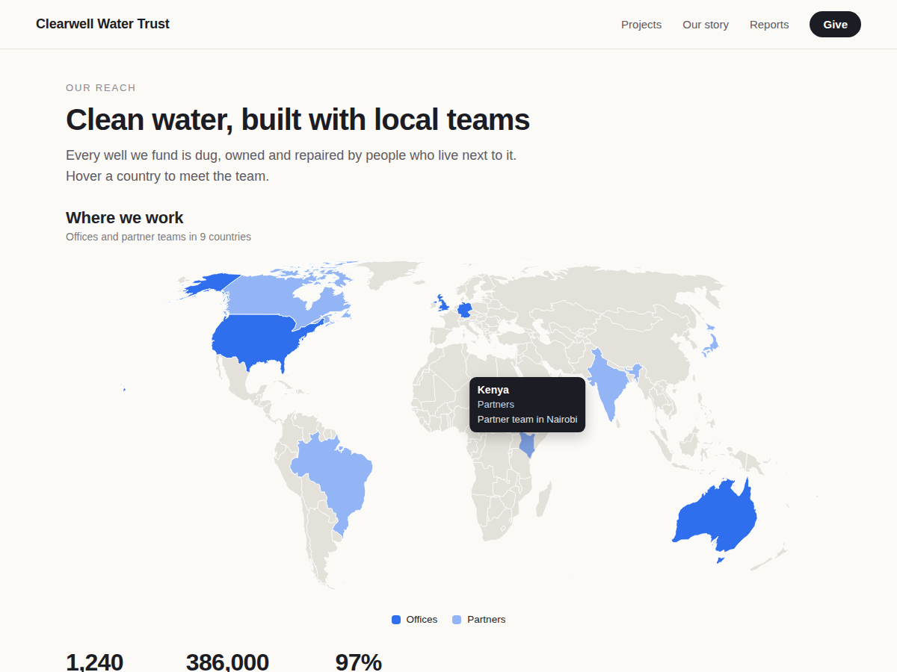

Regiomap
Clickable world and US maps, color your regions
- Color countries or US states in a few clicks
- Hover text and a link for every region
- Color groups with a legend, or color by value
- Sharp on phones, readable by screen readers

What it does
A list of 14 states under "Where we work" gets skimmed. The same states colored on a map are clear in a second. Regiomap puts a clickable world or US map on any page and colors the countries or states you pick.
Click the map in the editor, open Settings and add your regions from a searchable list, or paste them in. Put them in color groups such as "Offices" and "Partners", and the legend follows. Give each region a line of hover text and a link to a page, so a visitor who clicks Texas lands on your Texas page. Pick the colors and the font. The editor shows every change at once.
New maps start with sample regions and a title, so the page never shows an empty box. The map fits the box on desktop and fills the width on phones. Screen readers and search engines get every region, its text and link as a plain list. Only the map you use is loaded, after your page.
The free plan gives you the world and US maps, up to 10 colored regions in 3 groups, with no branding. Premium adds maps of Europe, Canada, the UK and Ireland, and Australia, unlimited regions, color by value with a range legend (members per country, sales per state), pins with pop-up text, and zoom buttons.
Price
Free
- World map and US states map
- Color up to 10 regions, 3 groups
- Hover text and a link per region
- No branding on your site
Premium
$5/month, $48/year ($4/month billed yearly)
- Europe, Canada, UK and Australia maps
- Unlimited regions and color groups
- Color by value with a legend
- Pins with pop-up text, zoom buttons